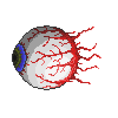
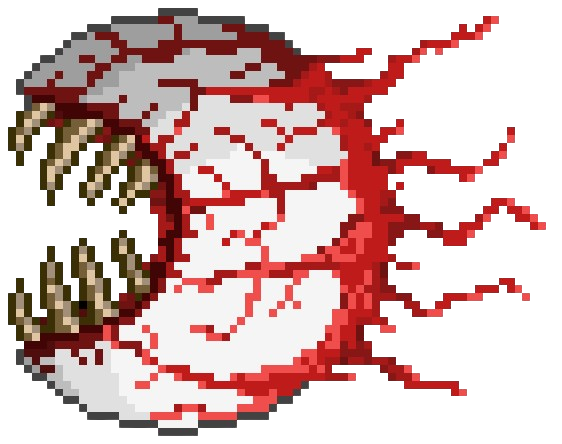

The Eye of Cthulhu is a much bigger of version of a demon eye. Its attacks consist of floating towards the player and summoning 3-4 Servants of Cthulhu that drop hearts and stars upon death.
Once the Eye of Cthulhu reaches around 3016 hp, it starts to change into its second form. In its second form, it has a much more scarier appearance as its lens are shredded inward into a mouth full of fangs. Its attacks are much more faster as it now aggressively dashes towards the player. It no longer spawns Servants of Cthulhu but its damage is increased.
The Eye of Cthulhu can randomly spawn with a 33% chance each night under these conditions:
The Eye of Cthulhu can be manually summoned using the Suspicious Looking Eye during nighttime.
Suspicious Looking Eye can be crafted using the following items on a Demon/Crimson Altar
The Eye of Cthulhu can be only fought during nighttime. If the day becomes daytime or if the player goes too far away from the boss, the Eye of Cthulhu will despawn